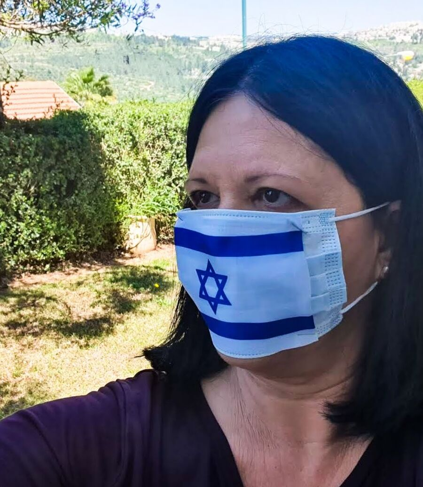

צילום סטודיו · תדמית · בוקים · בית זית
צילום שמסתכל לאנשים בעיניים
יהודית הרפז, צלמת סטודיו וצלמת חברתית. מצלמת בעיקר נשים, בסטודיו וברחוב, ומציגה תערוכות בתיאטרון ירושלים.
מתוך "הדגל שלי - בכל מצב" · צילום: יהודית הרפז
יהודית הרפז, צלמת סטודיו וצלמת חברתית. מצלמת בעיקר נשים, בסטודיו וברחוב, ומציגה תערוכות בתיאטרון ירושלים.
"אני צלמת, העוסקת בסטודיו שלי עם נשים ואוהבת לתרום לחברה." כך יהודית מתארת את העבודה שלה. אותה סקרנות לאנשים שהובילה אותה לצלם 70 נשים ו-68 זוגות עיניים ברחבי הארץ, עומדת גם מאחורי כל צילום אישי.
היא נותנת למצולמים לבחור מקום, חפץ או אדם שמספר משהו עליהם, והתוצאה היא תמונה שנראית כמוכם ולא כמו עוד תמונה.
צילום פורטרט בסטודיו, בדגש על צילומי נשים. זמן לשיחה, להיכרות ולמצוא את המבט הנכון.
תמונה מקצועית לעסק, לאתר ולרשתות, שנראית אמינה ואישית.
סדרת צילומים אישית, בסטודיו או במקום שבחרתם, שמספרת סיפור אחד שלם.
פרויקטים ארוכים שבהם יהודית יוצאת עם מצלמה ויומן לפגוש אנשים בכל רחבי הארץ.
כ-120 צילומים אנושיים ותיעודיים על הדומה והשונה בין ירושלים לתל אביב, ועל הכביש שמחבר ביניהן.
72 תמונות צבע של דגל ישראל, שנאספו במשך עשור בארץ ובעולם. תוכננה לגלריה ועלתה לרשת בגלל הקורונה.
70 נשים ישראליות מגיל שנה עד 70, בשחור-לבן. שנה של מסע ברחבי הארץ, ביניהן ירדנה ארזי, רונה רמון ואופירה אסייג.
68 זוגות עיניים של אנשים מהחברה הישראלית, מקריית שמונה ועד אילת, ובהם הנשיא ראובן ריבלין ודוד רובינגר.
"צילמתי אותו במצבים הכי אינטימיים שיש." מבחר מתוך 72 התמונות.


"אני מקווה שהתערוכה תפתח בכל אחת ואחד צוהר לראייה מקרבת, מחברת ואוהבת, ושתסייע לנו לראות את הטוב זה בזה."יהודית הרפז, בפתיחת "כביש 1", תיאטרון ירושלים 2026

צלמת חברתית, ילידת חיפה ותושבת בית זית. מצלמת בעיקר צילומי נשים, סטודיו ורחוב, ושואפת דרך הצילום לתת ערך לחברה הישראלית על כל גווניה.
בוגרת האוניברסיטה העברית במתמטיקה ולשון, למדה משפטים והוסמכה לעריכת דין. כותבת את הבלוג "אישה ועדשה" על צילום, טיולים והחיים בכלל.
צילום סטודיו, תדמית או בוק? ספרו מה אתם מחפשים ויהודית תחזור אליכם לתאם.
סטודיו בבית זית.